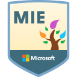

I am a student-centered, innovative, and results-oriented educator passionate about providing transformative STEM learning experiences. Nothing gives me more joy than my students.
Lead teacher with experience teaching Coding 1, AP Computer Science Principles, AP Computer Science A, Geospatial Information Systems, Algebra 1, Geometry, Trigonometry, Pre-Calculus, College Algebra, and ACT Prep.
Serve as founding teacher for Computer Science program, developing a 3-year course sequence including AP Computer Science Principles and AP Computer Science A.
Reached National Math & Science Initiative (NMSI) 2019 Performance Goal in AP Computer Science Principles, with students exceeding state and national score averages.
Oversaw growth of over 82% for participation in AP Computer Science from 2019 to 2020 school years, and growth of 68% in Computer Science participation overall.
Student Council Advisor leading a group of over 50 students who meet daily. Promote positive school culture by planning school-wide programming and traditions.
Sponsor of “Students on the Run!” an after-school half-marathon training group promoting health and fitness.
Served as member of College Board’s Advanced Placement Program® (AP®) Computer Science Principles Instructional Design Team (IDT). Contributed activities aligned to the 2020-2021 Conceptual Framework to enhance student learning for publishing in the Course and Exam Description Binder.
Experience leading multiple sessions of professional development for high school math teachers on educational technology, including advanced strategies for using Desmos and hands-on learning in the 9-12 math classroom.
Collaborate with partner educator to review and evaluate $10,000 and $25,000 STEM-education grant proposals from a nationwide applicant pool. America’s Farmers Grow Rural Education, sponsored by the Monsanto Fund.
Lending my expertise in computer science curriculum and instruction, I have provided revisions and updates for GlobalHack's Youth Coding League curriculum. These revisions improved teacher-facing and student-facing materials distributed to over 15 participating middle school programs learning the Python coding language.
Lending my expertise in mathematics curriculum and instruction, I provided the district with a 4-week, hands-on, collaborative curriculum for Summer Learning. This program led middle school students to integrate geometry and pre-algebra skills in the design and construction of a mock city.
The Master of Arts in Educational Technology program at Lindenwood University has prepared me for roles of leadership in instructional technology settings in school, business, and industry. The emphasis is in equipping students to leverage technology in order to facilitate instruction in a wide variety of settings. Acquired technical and research skills involving equipment, software, web-based applications, current issues, trends, theories, and principles of instructional design.
Minor: Spanish
My experience at Saint Louis University provided a strong grounding in mathematics and logical-thinking while providing broad experiences in a variety of educational settings including charter, magnet, parochial, and traditional public schools. My experience as a Spanish language minor led to experiences in Central America including El Salvador and Nicaragua.